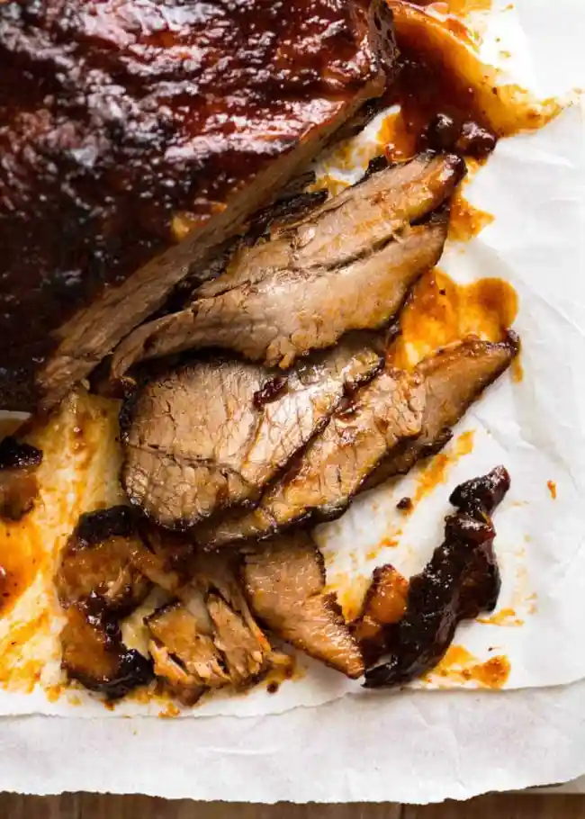
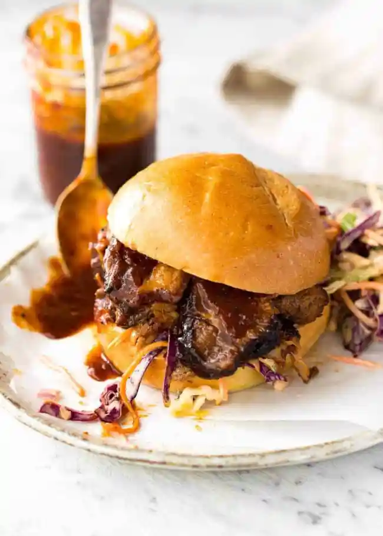

Beef brisket and barbecue sauce

This brisket is perfect for your slow cooker and saucy sandwiches!
Ingredients
BEEF
- 3 - 4 pounds of beef brisket
- 1 tbsp olive oil
RUB
- 1 tbsp brown sugar
- 2 tsp paprika powder
- 1 tsp onion powder
- 1 tsp garlic powder
- 1/2 tsp cumin powder
- 3/4 tsp mustard powder
- 1 tsp salt
- 1/2 tsp black pepper
SAUCE
- 2 garlic cloves, minced
- 1/2 cup (125ml) apple cider vinegar
- 1 1/2 cups (375ml) ketchup
- 1/2 cup (110g) brown sugar, packed
- 2 tsp each: black pepper, onion powder, mustard powder
- 1 tsp cayenne pepper
- 1 tbsp worcestershire sauce
Directions
- Combine rub ingredients. Evenly cover brisket. Rest for 24 hours in the fridge.
- Combine BBQ sauce ingredients in a slow cooker. Mix then add the brisket.
- Cook on low for 8 hours (for 1.5kg/3lb)to 10 hours (2kg/4lb)
- Remove brisket into a tray
- Pour the liquid from the slow cooker into a saucepan. Bring to a simmer over medium high
head and reduce until it thickens to a syrup consistency.
- Drizzle brikset with oil then roast in a 200C/390F oven for 15 minutes until browning begins.
Remove brisket from oven and cover generously with sauce, then return to oven for 5 minutes
Remove and basted again, then return to oven for a final 5-10 minutes until caramelized
- Serve: Slice thinly across the grain and serve with remaining BBQ sauce.
Notes
Consider serving with rolls and cole slaw for a killer sandwich.

Home